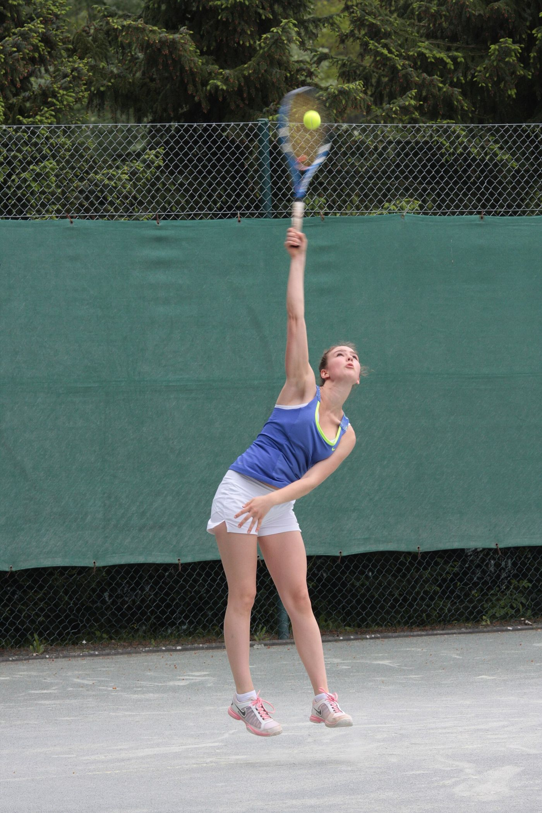
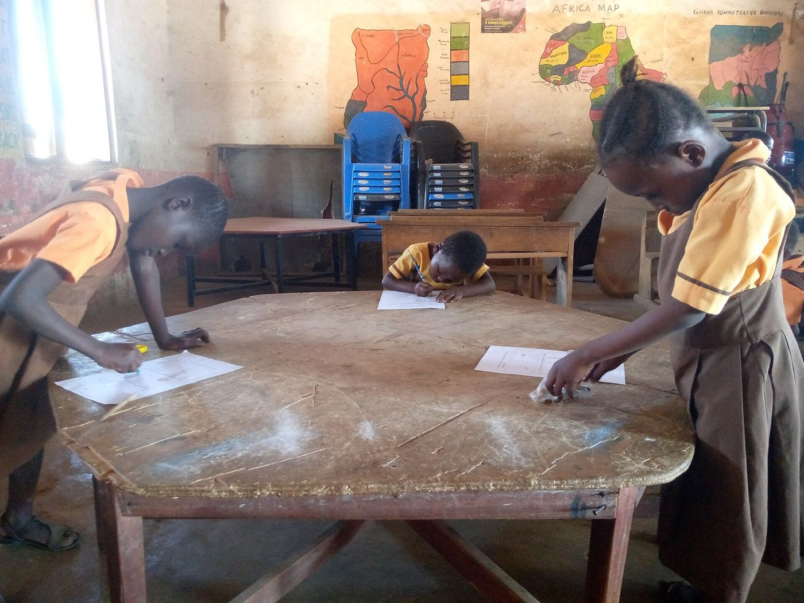

RÉVISION · LEÇON 2
Je la regarde, je lui parle !Ne pas répéter + prête pour la vérification
Bonjour Nora !
Aujourd'hui, tu apprends à ne pas répéter un nom (le, la, les, lui, leur, qui, que). Puis tu prépares la vérification avec des stratégies et une mini-vérification, comme le jour de l'examen.
Oggi impari a non ripetere un nome (le, la, les, lui, leur, qui, que). Poi prepari la verifica con delle strategie e una mini-verifica, come il giorno dell'esame.
Ce jeu, je l'adore : c'est le jeu que je préfère !
Questo gioco lo adoro: è il gioco che preferisco!
▶ Clique pour écouter. Répète la phrase à voix haute.
Clicca per ascoltare. Ripeti la frase ad alta voce.
IT : la traduction en italien. Essaie d'abord sans !
La traduzione in italiano. Prova prima senza!
Après chaque règle, tu t'entraînes : les exercices ressemblent à ceux de ta vérification.
Dopo ogni regola ti eserciti: gli esercizi somigliano a quelli della tua verifica.
★ Tes réponses restent enregistrées. À la fin, « À revoir » te montre les points à retravailler.
Le tue risposte restano salvate. Alla fine, « À revoir » ti mostra i punti da ripassare.

1
Échauffement : le passé composé
Riscaldamento: il passato prossimo
Avant de commencer, un petit échauffement : 2 pièces, être ou avoir, le bon participe.
Prima di cominciare, un piccolo riscaldamento: 2 pezzi, être o avoir, il participio giusto.
Rappel : le passé composé
Ripasso: il passato prossimo
avoir ou être+participe passé
Je suis allée au cinéma.
Sono andata al cinema.
J'ai vu un film génial.
Ho visto un film fantastico.
être : aller, venir, arriver, partir, entrer, sortir, rester, rentrer, tomber… · avoir : tous les autres.
être: aller, venir, arriver, partir, entrer, sortir, rester, rentrer, tomber… · avoir: tutti gli altri.
1
ÉCHAUFFEMENT
Choisis la bonne forme du passé composé.
Scegli la forma giusta del passato prossimo.
1
Hier, Léa ______ au cinéma avec sa cousine.
Ieri Léa è andata al cinema con sua cugina.
✓ Hier, Léa est allée au cinéma avec sa cousine.
2
Nous ______ un film très drôle.
Abbiamo visto un film molto divertente.
✓ Nous avons vu un film très drôle.
3
Mon coach ______ des photos du tournoi.
Il mio allenatore ha fatto delle foto del torneo.
✓ Mon coach a pris des photos du tournoi.
4
Les garçons ______ à la maison.
I ragazzi sono rimasti a casa.
✓ Les garçons sont restés à la maison.

2
Le, la, les : ne pas répéter
Le, la, les: non ripetere
Le, la, l', les : le nom qui disparaît
Le, la, l', les: il nome che sparisce
Pour ne pas répéter un nom, on le remplace par un petit mot. On pose la question « qui ? » ou « quoi ? » après le verbe.
Per non ripetere un nome, lo si sostituisce con una parolina. Si fa la domanda « chi? » o « che cosa? » dopo il verbo.
Je regarde quoi ? → la série → je la regarde.
| le nom | devient | |
|---|---|---|
| masculin | Tu regardes ce film ? | Oui, je le regarde. |
| féminin | J'écoute la chanson. | Je l'écoute. (voyelle) |
| pluriel | Il voit Marie et sa copine. | Il les voit. |
| pluriel | Vous aidez les camarades. | Vous les aidez. |
Tu connais ma cousine ? Oui, je la connais.
Conosci mia cugina? Sì, la conosco.
Tu aimes ce jeu ? Oui, je l'adore !
Ti piace questo gioco? Sì, lo adoro!
Où va le petit mot ? Devant le verbe !
Dove va la parolina? Davanti al verbo!
sujet+le / la / les+verbe
➖ Avec la négation
Elle cherche ses clés, mais elle ne les trouve pas.
Cerca le chiavi, ma non le trova.
ne + petit mot + verbe + pas
ne + parolina + verbo + pas
➕ Avec deux verbes
Tu peux l'aider ?
Puoi aiutarlo?
Je vais la regarder ce soir.
La guarderò stasera.
Devant l'infinitif.
Davanti all'infinito.
💡 Comme en italien !
je la regarde = io la guardo · je ne les trouve pas = non le trovo
Stessa posizione che in italiano.
2
LE, LA, L', LES
Choisis ou écris le bon petit mot.
Scegli o scrivi la parolina giusta.
1
Tu connais la nouvelle prof ? Oui, je ______ connais.
Conosci la nuova prof? Sì, la conosco.
✓ Oui, je la connais.
2
Tu regardes les vidéos de tennis ? Oui, je ______ regarde.
Guardi i video di tennis? Sì, li guardo.
✓ Oui, je les regarde.
3
Tu aimes ce jeu vidéo ? Oui, je ______ adore.
Ti piace questo videogioco? Sì, lo adoro.
✓ Oui, je l'adore.
4
Tu trouves ton portable ? Non, je ne ______ trouve pas.
Trovi il tuo cellulare? No, non lo trovo.
✓ Non, je ne le trouve pas.
5
Ton frère ne comprend pas l'exercice. Tu peux aider ?
Tuo fratello non capisce l'esercizio. Puoi aiutarlo?
✓ Ton frère ne comprend pas l'exercice. Tu peux l'aider ?
6
Nous adorons cette série : nous regardons tous les soirs.
Adoriamo questa serie: la guardiamo tutte le sere.
✓ Nous adorons cette série : nous la regardons tous les soirs.
7
Ils cherchent leurs voisins, mais ils ne trouvent pas.
Cercano i loro vicini, ma non li trovano.
✓ Ils cherchent leurs voisins, mais ils ne les trouvent pas.

3
Lui, leur : à qui ?
Lui, leur: a chi?
Lui, leur : à qui ?
Lui, leur: a chi?
Avec les verbes qui ont à (parler à, téléphoner à, écrire à, répondre à, donner à, dire à, expliquer à), on pose la question « à qui ? ».
Con i verbi che hanno « à » (parlare a, telefonare a, scrivere a…), si fa la domanda « a chi? ».
Le prof parle à qui ? → à Claire → il lui parle.
👤 une personne → lui
Je téléphone à ma grand-mère. → Je lui téléphone.
Telefono a mia nonna. → Le telefono.
Il parle à Paul. → Il lui parle.
Parla a Paul. → Gli parla.
lui = à lui ou à elle
lui = a lui oppure a lei
👥 plusieurs → leur
Nous téléphonons à nos amis. → Nous leur téléphonons.
Telefoniamo ai nostri amici. → Telefoniamo loro.
Le prof parle aux élèves : il leur donne les consignes.
Il prof parla agli alunni: dà loro le consegne.
🧭 Le truc : quoi ? → le, la, les · à qui ? → lui, leur
| qui ? quoi ? | à qui ? | |
|---|---|---|
| je | me | me |
| tu | te | te |
| il / elle | le / la | lui |
| nous | nous | nous |
| vous | vous | vous |
| ils / elles | les | leur |
moi = c'est moi. Pour il ou elle, jamais « moi » : tu peux l'aider ? tu peux lui parler ?
moi = sono io. Per lui o lei mai « moi »: puoi aiutarlo? puoi parlargli?
3
LUI OU LEUR ? LE, LA OU LES ?
Choisis le bon petit mot.
Scegli la parolina giusta.
1
Tu téléphones à ta grand-mère ? Oui, je ______ téléphone.
Telefoni a tua nonna? Sì, le telefono.
✓ Oui, je lui téléphone.
2
Tu écris à tes cousins ? Oui, je ______ écris.
Scrivi ai tuoi cugini? Sì, scrivo loro.
✓ Oui, je leur écris.
3
Tu parles à ton coach ? Oui, je ______ parle après le match.
Parli al tuo allenatore? Sì, gli parlo dopo la partita.
✓ Oui, je lui parle après le match.
4
Tu invites tes copines ? Oui, je ______ invite.
Inviti le tue amiche? Sì, le invito.
✓ Oui, je les invite.
5
Tu peux expliquer ce mot à Paul ? Oui, je le ______ explique.
Puoi spiegare questa parola a Paul? Sì, gliela spiego.
✓ Oui, je le lui explique.
6
Le prof parle aux élèves : il donne les consignes.
Il prof parla agli alunni: dà loro le consegne.
✓ Le prof parle aux élèves : il leur donne les consignes.
7
Tu réponds à la prof ? Oui, je réponds.
Rispondi alla prof? Sì, le rispondo.
✓ Oui, je lui réponds.
4
RÉÉCRIS LA PHRASE
Remplace le mot en gras par le, la, l', les, lui ou leur. Écris toute la phrase.
Sostituisci la parola in grassetto con le, la, l', les, lui o leur. Scrivi tutta la frase.
1
Je regarde la série. →
Guardo la serie. → La guardo.
✓ Je la regarde.
2
Nous aidons nos voisins. →
Aiutiamo i nostri vicini. → Li aiutiamo.
✓ Nous les aidons.
3
Elle parle à son père. →
Parla a suo padre. → Gli parla.
✓ Elle lui parle.
4
Ils écrivent à leurs amis. →
Scrivono ai loro amici. → Scrivono loro.
✓ Ils leur écrivent.
5
J'écoute la chanson. →
Ascolto la canzone. → La ascolto.
✓ Je l'écoute.
5
LE PETIT MOT À SA PLACE
Remets les mots dans l'ordre.
Rimetti le parole in ordine.
1
Remets les mots dans l'ordre.
Non la guardo.
✓ Je ne la regarde pas.
2
Remets les mots dans l'ordre.
Telefoniamo loro stasera.
✓ Nous leur téléphonons ce soir.
3
Remets les mots dans l'ordre.
Puoi aiutarli?
✓ Tu peux les aider ?
🗣️ À toi de parler !
Réponds à voix haute avec une phrase complète. Les débuts de phrase t'aident : clique pour les écouter. Puis compare avec l'exemple.
Rispondi ad alta voce con una frase completa. Gli inizi di frase ti aiutano: clicca per ascoltarli. Poi confronta con l'esempio.
1
Tu regardes des séries ? Réponds avec le, la ou les.
Guardi delle serie? Rispondi con le, la o les.
Pour t'aider :
Exemple de réponse
Oui, je les regarde le soir. Ma série préférée, je la regarde avec ma sœur.
Sì, le guardo la sera. La mia serie preferita la guardo con mia sorella.
2
Tu téléphones souvent à tes grands-parents ? Réponds avec leur.
Telefoni spesso ai tuoi nonni? Rispondi con leur.
Pour t'aider :
Exemple de réponse
Oui, je leur téléphone le dimanche.
Sì, telefono loro la domenica.
4
Qui ou que ?
Qui o que?
Qui ou que ? Une méthode en 3 étapes
Qui o que? Un metodo in 3 tappe
Pour réunir deux phrases, le nom répété disparaît et on met qui ou que.
Per unire due frasi, il nome ripetuto sparisce e si mette qui o que.
C'est le garçon. Le garçon joue au foot.
- Je souligne le nom répété dans la 2e phrase : le garçon.Sottolineo il nome ripetuto nella 2a frase.
- Je l'efface :
le garçonjoue au foot.Lo cancello. - Je regarde le mot juste après : un verbe → qui · un sujet (je, tu, il, nous, Léa…) → que.Guardo la parola subito dopo: un verbo → qui · un soggetto → que.
C'est le garçon qui joue au foot.
È il ragazzo che gioca a calcio.
qui + verbe
J'ai une amie qui parle trois langues.
Ho un'amica che parla tre lingue.
Voici le prof qui explique bien.
Ecco il prof che spiega bene.
qui ne prend jamais d'apostrophe : qui adore, qui arrive.
qui non prende mai l'apostrofo.
que / qu' + sujet
Voici le film que nous regardons ce soir.
Ecco il film che guardiamo stasera.
C'est le livre qu'il lit dans le bus.
È il libro che legge sull'autobus.
qu' devant une voyelle : qu'il, qu'elle, qu'on.
qu' davanti a vocale.
6
QUI, QUE OU QU' ?
Choisis le bon mot.
Scegli la parola giusta.
1
J'ai une copine ______ joue du piano.
Ho un'amica che suona il pianoforte.
✓ J'ai une copine qui joue du piano.
2
Le sport ______ je préfère, c'est le tennis.
Lo sport che preferisco è il tennis.
✓ Le sport que je préfère, c'est le tennis.
3
Voilà le jeu ______ il adore.
Ecco il gioco che adora.
✓ Voilà le jeu qu'il adore.
4
C'est la raquette ______ coûte cent francs.
È la racchetta che costa cento franchi.
✓ C'est la raquette qui coûte cent francs.
5
La série ______ nous regardons est géniale.
La serie che guardiamo è fantastica.
✓ La série que nous regardons est géniale.
6
Ce sont les élèves ______ arrivent toujours à l'heure.
Sono gli alunni che arrivano sempre puntuali.
✓ Ce sont les élèves qui arrivent toujours à l'heure.
7
RÉUNIS LES DEUX PHRASES
Réunis les deux phrases avec qui, que ou qu'. Écris toute la phrase.
Unisci le due frasi con qui, que o qu'. Scrivi tutta la frase.
1
C'est la fille. La fille joue au tennis avec moi.
→
→
È la ragazza che gioca a tennis con me.
✓ C'est la fille qui joue au tennis avec moi.
2
Voici le film. Nous regardons le film ce soir.
→
→
Ecco il film che guardiamo stasera.
✓ Voici le film que nous regardons ce soir.
3
J'ai un exercice. Je ne comprends pas l'exercice.
→
→
Ho un esercizio che non capisco.
✓ J'ai un exercice que je ne comprends pas.
4
C'est mon amie. Mon amie habite à Bellinzone.
→
→
È la mia amica che abita a Bellinzona.
✓ C'est mon amie qui habite à Bellinzone.
5
Voilà la musique. Tu n'aimes pas cette musique.
→
→
Ecco la musica che non ti piace.
✓ Voilà la musique que tu n'aimes pas.
5
Stratégies pour la vérification
Strategie per la verifica
Avant d'écrire : lis la consigne et l'exemple
Prima di scrivere: leggi la consegna e l'esempio
- Je lis la consigne deux fois et je souligne le mot important (qui / que, COD / COI, passé composé…).Leggo la consegna due volte e sottolineo la parola importante.
- Je regarde l'exemple : il me montre exactement ce que je dois écrire.Guardo l'esempio: mi mostra esattamente cosa devo scrivere.
- Je fais la même chose que l'exemple, puis je relis ma phrase.Faccio la stessa cosa dell'esempio, poi rileggo la mia frase.
📝 Exemple de consigne
Réécris la phrase avec le bon COD ou COI : J'écoute la chanson. → Je l'écoute.
Riscrivi la frase con il COD o COI giusto: Ascolto la canzone. → La ascolto.
On remplace le nom par le petit mot. On n'écrit pas les lettres « COD » ou « COI » dans la phrase.
Si sostituisce il nome con la parolina. Non si scrivono le lettere « COD » o « COI » nella frase.
Les mots des questions : que dois-je répondre ?
Le parole delle domande: che cosa devo rispondere?
| question | je cherche… | exemple |
|---|---|---|
| Qui ? | une personne | Léa, mon coach |
| Où ? | un lieu | à Lugano, au parc |
| Quand ? | un moment | le dimanche, à 8 h |
| Combien ? | un nombre, un prix | trois heures, 20 francs |
| Pourquoi ? | une cause | Parce que… / À cause de… |
| Comment ? | la manière | en bus, vite |
| Qu'est-ce que… ? | une chose | C'est un salon… |
| En quoi consiste… ? | une activité | Ils analysent, ils jouent… |
✅ Réponds avec une phrase complète
Pourquoi Lou a mal au dos ? → Parce qu'elle s'entraîne beaucoup.
Perché Lou ha mal di schiena? → Perché si allena molto.
À pourquoi, on répond avec parce que. On reprend les mots de la question.
A « pourquoi » si risponde con « parce que ». Si riprendono le parole della domanda.
Cause ou conséquence ?
Causa o conseguenza?
🔙 la cause : parce que, car, à cause de
Je reste à la maison parce qu'il pleut.
Resto a casa perché piove.
Le match est annulé à cause de la pluie.
La partita è annullata a causa della pioggia.
🔜 la conséquence : donc, alors, c'est pour ça que
Tu étudies beaucoup, c'est pour ça que tu réussis.
Studi molto, è per questo che riesci.
Il fait froid, donc je prends mon pull.
Fa freddo, quindi prendo il maglione.
8
LA BONNE RÉPONSE
Lis la question. Choisis la réponse qui va bien.
Leggi la domanda. Scegli la risposta adatta.
1
Pourquoi Léa est fatiguée ?
Perché Léa è stanca?
✓ Parce qu'elle a joué trois heures.
2
Combien coûte le billet ?
Quanto costa il biglietto?
✓ Le billet coûte vingt francs.
3
Où se trouve le salon du jeu vidéo ?
Dove si trova il salone del videogioco?
✓ Il se trouve à Paris, à la porte de Versailles.
4
En quoi consiste le travail de ces joueurs ?
In che cosa consiste il lavoro di questi giocatori?
✓ Ils s'entraînent et analysent leurs parties.
5
Il pleut, ______ nous restons à la maison.
Piove, quindi restiamo a casa.
✓ Il pleut, donc nous restons à la maison.
6
Je suis en retard ______ le bus n'est pas passé.
Sono in ritardo perché l'autobus non è passato.
✓ Je suis en retard parce que le bus n'est pas passé.
✨ Pour plus tard : y et en
Tu vas à Lugano ? Oui, j'y vais. (y = à Lugano)
Vai a Lugano? Sì, ci vado.
Tu veux du gâteau ? Oui, j'en veux. (en = du gâteau)
Vuoi della torta? Sì, ne voglio.
Comme ci et ne en italien. On les étudiera ensemble après la vérification.
Come « ci » e « ne » in italiano. Li studieremo insieme dopo la verifica.
6
Ma mini-vérification
La mia mini-verifica
Fais cette petite vérification comme le jour de l'examen : sans regarder les règles. Ensuite, regarde ton score !
Fai questa piccola verifica come il giorno dell'esame: senza guardare le regole. Poi guarda il tuo punteggio!
PARTIE 1 · COMPRÉHENSION ORALE
9
VRAI OU FAUX ?
Écoute le dialogue entre Léa et Marco (deux fois). Vrai ou faux ? Si c'est faux, choisis la bonne correction.
Ascolta il dialogo tra Léa e Marco (due volte). Vero o falso? Se è falso, scegli la correzione giusta.
Écoute le dialogue
1
a. Léa est allée à Lugano avec sa sœur.
Léa è andata a Lugano con sua sorella.
✓ Faux : Léa est allée à Lugano avec sa cousine.
2
Corrige la phrase a : Léa est allée à Lugano…
Correggi la frase a.
✓ Léa est allée à Lugano avec sa cousine.
3
b. Léa et sa cousine ont mangé une glace.
Léa e sua cugina hanno mangiato un gelato.
✓ Vrai : elles ont mangé une glace.
4
c. Marco est allé au match de foot.
Marco è andato alla partita di calcio.
✓ Faux : Marco est resté à la maison.
5
Corrige la phrase c : Marco…
Correggi la frase c.
✓ Marco est resté à la maison.
6
d. Dimanche prochain, ils vont aller au cinéma.
Domenica prossima andranno al cinema.
✓ Vrai : dimanche prochain, ils vont au cinéma.
Lire la transcription (après l'exercice !)
Marco
Salut Léa ! Tu as passé un bon week-end ?
Ciao Léa! Hai passato un bel fine settimana?
Léa
Oui, super ! Samedi, je suis allée à Lugano avec ma cousine.
Sì, fantastico! Sabato sono andata a Lugano con mia cugina.
Marco
Ah bon ? Qu'est-ce que vous avez fait ?
Ah sì? Che cosa avete fatto?
Léa
Nous avons marché au bord du lac, puis nous avons mangé une glace. Et toi ?
Abbiamo camminato in riva al lago, poi abbiamo mangiato un gelato. E tu?
Marco
Moi, je suis resté à la maison. J'ai joué aux jeux vidéo avec mon frère.
Io sono rimasto a casa. Ho giocato ai videogiochi con mio fratello.
Léa
Tu n'es pas allé au match de foot ?
Non sei andato alla partita di calcio?
Marco
Non, il a beaucoup plu ! Le match a été annulé.
No, ha piovuto tantissimo! La partita è stata annullata.
Léa
Dommage ! Dimanche prochain, on va au cinéma ? Il y a un nouveau film.
Peccato! Domenica prossima andiamo al cinema? C'è un film nuovo.
Marco
D'accord, je viens avec toi !
D'accordo, vengo con te!
PARTIE 2 · COMPRÉHENSION ÉCRITE
Lou, 14 ans, la tête dans les balles
Lou a quatorze ans et elle habite à Bellinzone. Elle joue au tennis depuis l'âge de six ans. Le matin, elle va à l'école ; l'après-midi, elle s'entraîne trois heures avec son coach. Le week-end, elle joue des tournois en Suisse et en Italie. L'année dernière, elle a gagné le tournoi junior de Lugano ! Mais ce n'est pas toujours facile : elle a souvent mal au dos, parce qu'elle s'entraîne beaucoup. Elle voit ses amies seulement le dimanche. Son rêve ? Jouer un jour à Roland-Garros, le grand tournoi de tennis de Paris.
Lou ha quattordici anni e abita a Bellinzona. Gioca a tennis dall'età di sei anni. La mattina va a scuola; il pomeriggio si allena tre ore con il suo allenatore. Il fine settimana gioca tornei in Svizzera e in Italia. L'anno scorso ha vinto il torneo junior di Lugano! Ma non è sempre facile: ha spesso mal di schiena, perché si allena molto. Vede le sue amiche solo la domenica. Il suo sogno? Giocare un giorno al Roland-Garros, il grande torneo di tennis di Parigi.
10
LIS ET RÉPONDS
Lis le texte sur Lou et choisis la bonne réponse.
Leggi il testo su Lou e scegli la risposta giusta.
1
Quel âge a Lou ?
Quanti anni ha Lou?
✓ Lou a quatorze ans.
2
Où habite-t-elle ?
Dove abita?
✓ Elle habite à Bellinzone.
3
Combien d'heures s'entraîne-t-elle l'après-midi ?
Quante ore si allena il pomeriggio?
✓ Elle s'entraîne trois heures l'après-midi.
4
Pourquoi a-t-elle souvent mal au dos ?
Perché ha spesso mal di schiena?
✓ Parce qu'elle s'entraîne beaucoup.
5
Qu'est-ce qu'elle a gagné l'année dernière ?
Che cosa ha vinto l'anno scorso?
✓ Elle a gagné le tournoi junior de Lugano.
6
Quand voit-elle ses amies ?
Quando vede le sue amiche?
✓ Elle voit ses amies seulement le dimanche.
7
Qu'est-ce que Roland-Garros ?
Che cos'è il Roland-Garros?
✓ C'est un grand tournoi de tennis à Paris.
PARTIE 3 · LANGUE
11
UN PEU DE TOUT
Écris la bonne forme.
Scrivi la forma giusta.
1
Hier, Lou (gagner) son match.
Ieri Lou ha vinto la sua partita.
✓ Hier, Lou a gagné son match.
2
Ses parents (venir) la voir.
I suoi genitori sono venuti a vederla.
✓ Ses parents sont venus la voir.
3
Tu connais Lou ? Oui, je connais.
Conosci Lou? Sì, la conosco.
✓ Oui, je la connais.
4
Tu parles à ses parents ? Oui, je parle.
Parli ai suoi genitori? Sì, parlo loro.
✓ Oui, je leur parle.
5
C'est la joueuse je préfère.
È la giocatrice che preferisco.
✓ C'est la joueuse que je préfère.
6
Lou a une amie joue aussi au tennis.
Lou ha un'amica che gioca anche lei a tennis.
✓ Lou a une amie qui joue aussi au tennis.
PARTIE 4 · EXPRESSION ÉCRITE
✍️ Raconte ton dernier week-end
Écris 6 phrases sur ton dernier week-end. Utilise le passé composé.
Scrivi 6 frasi sul tuo ultimo fine settimana. Usa il passato prossimo.
Pour t'aider :
✔ Vérifie ton texte
- ✔J'ai 2 verbes au passé composé avec avoir.Ho 2 verbi al passato prossimo con avoir.
- ✔J'ai 1 verbe avec être (et l'accord : allée, restée…).Ho 1 verbo con être (e l'accordo).
- ✔J'ai utilisé qui ou que.Ho usato qui o que.
- ✔J'ai utilisé parce que ou donc.Ho usato parce que o donc.
Exemple de texte
Samedi matin, je suis allée au tennis avec Léa. J'ai joué deux heures et j'ai gagné mon match ! L'après-midi, nous avons fait nos devoirs ensemble. Le soir, j'ai vu un film que ma sœur adore. Dimanche, je suis restée à la maison parce qu'il a plu. J'ai téléphoné à ma grand-mère et je lui ai raconté mon match.
Sabato mattina sono andata a tennis con Léa. Ho giocato due ore e ho vinto la mia partita! Il pomeriggio abbiamo fatto i compiti insieme. La sera ho visto un film che mia sorella adora. Domenica sono rimasta a casa perché ha piovuto. Ho telefonato a mia nonna e le ho raccontato la mia partita.

★
Mes phrases utiles
Le mie frasi utili
Écoute et répète ces phrases. Elles t'aident le jour de la vérification !
Ascolta e ripeti queste frasi. Ti aiutano il giorno della verifica!
Tu regardes ce film ? Oui, je le regarde.
Guardi questo film? Sì, lo guardo.
Elle cherche ses clés, mais elle ne les trouve pas.
Cerca le chiavi, ma non le trova.
Je téléphone à ma grand-mère : je lui téléphone.
Telefono a mia nonna: le telefono.
Le prof parle aux élèves : il leur donne les consignes.
Il prof parla agli alunni: dà loro le consegne.
C'est la fille qui joue au tennis avec moi.
È la ragazza che gioca a tennis con me.
Voici le film que nous regardons ce soir.
Ecco il film che guardiamo stasera.
Je reste à la maison parce qu'il pleut.
Resto a casa perché piove.
Tu étudies beaucoup, c'est pour ça que tu réussis.
Studi molto, è per questo che riesci.

★
À revoir
Da ripassare
Clique sur le lien pour relire la règle, puis écoute la bonne phrase et répète-la.
Clicca sul link per rileggere la regola, poi ascolta la frase giusta e ripetila.
Pas encore d'erreur. Les points à revoir apparaissent ici quand tu fais les exercices.
| Ex. | La bonne réponse | Ma réponse | La règle |
|---|